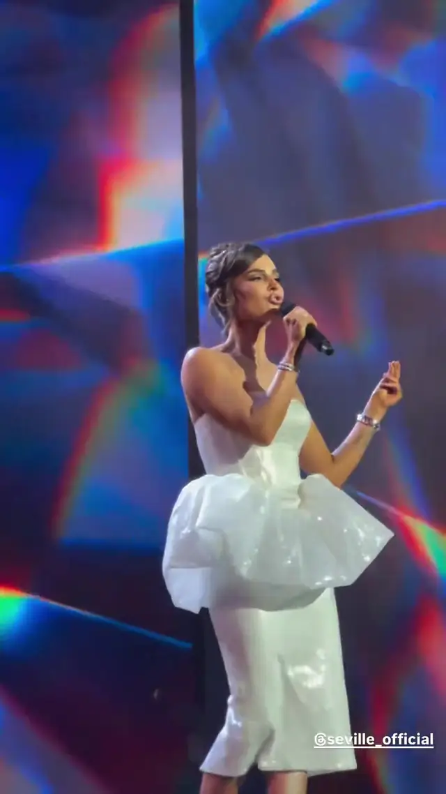

3 ноября 2026
Севиль выступила в Кремлёвском дворце на юбилее площадки
3 ноября Artik & Asti стали участниками большого концерта к 65-летию Государственного Кремлёвского дворца.

Кремлёвский дворец отметил 65 лет большим концертом в Большом зале. В заявленном составе — Лев Лещенко, Татьяна Буланова, Игорь Крутой, SHAMAN, Лариса Долина, Баста, Олег Газманов, «Хор Турецкого», ансамбль Александрова и многие другие, в том числе Artik & Asti.
Севиль вышла на сцену в белом образе с пышной баской. В следующий раз Artik & Asti выступят в Кремлёвском дворце 14 февраля 2027 года — на концерте «Праздник для всех влюблённых».
Источники: Государственный Кремлёвский дворец ↗, InterMedia ↗. Фото: кадр из видео @seville_official.